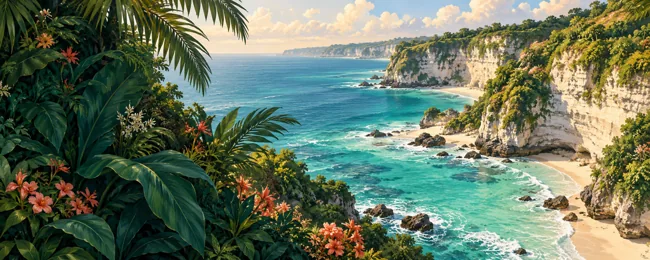
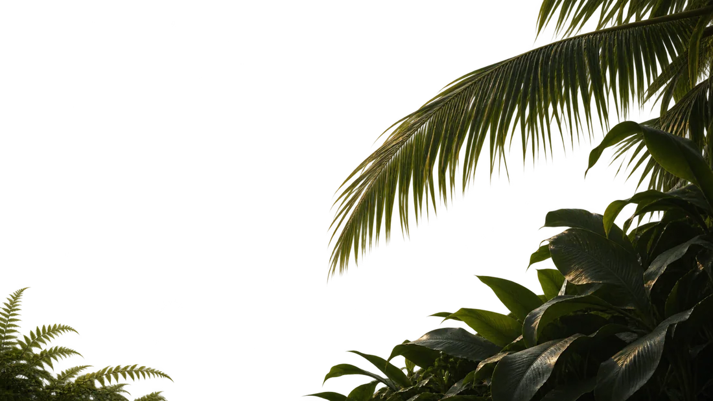
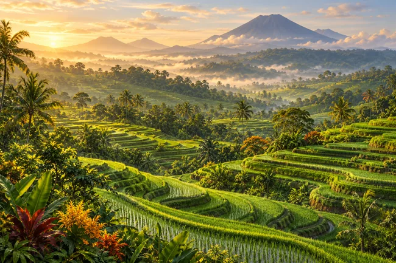

Бали вдвоём
За рамками привычного · Индонезия

11–22 ОКТЯБРЯДвенадцать дней.
Двенадцать дней.
Один остров.
Одна база в Кутухе и маршруты от южных пляжей до рисовых террас, Пениды и северного побережья.
- 12
- дней
- 29
- мест
- 72
- точки питания
ГЕОГРАФИЯ ПОЕЗДКИ
Остров в деталях.
Выберите день на карте или переключитесь на спутник.

Дороги · OpenFreeMap / OpenMapTiles / © OpenStreetMap. Маршруты · OSRM. Спутник · Sentinel-2 cloudless 2024 / EOX. Морские участки указаны в расписании.
02–08 / Истории острова
Из океана
в глубь острова
Все 12 дней списком
Загружаем дни…
Полевой альбом
Открытки
с острова
Четыре иллюстрации к маршруту. Каждую можно открыть крупно и перейти к её дню.
ЕДА ПО МАРШРУТУОт завтрака
От завтрака
до заката.
Найдите заведение по названию, району или дню поездки.
Открыть каталог
Ваша подборка

Сохранённые рестораны
ДВА ВАЖНЫХ ВЕЧЕРА
Перед поездкой
КУТУХ · 10–22 ОКТЯБРЯ
Nunamkhalu Private Villas & Spa
Одна база на всю поездку. Байк ждёт у виллы.
Что согласовать заранее ↗10 → 11 ОКТЯБРЯ
Прилетаете в 23:55
MU5029 · DPS. Паспортный контроль, багаж и автомобильный трансфер — после посадки. На виллу приедете уже 11 октября.
Согласовать ночное заселение и сохранение брони от 10 октября.22 → 23 ОКТЯБРЯ
В аэропорту к 21:30
Вылет MU890 — 00:30 23 октября. 22 октября: выезд предварительно до 12:00, местная программа, получение багажа, возврат байка и отдельный трансфер.
Хранение багажа, душ и поздний выезд пока не подтверждены.Весь маршрут
с собой.
Иллюстрированная PDF-версия содержит расписания и встроенные статические карты. Статусы уточнений сохранены.
Скачать PDF ↓Данные маршрута · JSONНИ ОДНА ТОЧКА НЕ ПОТЕРЯНА
Полный реестр ↓Ваши списки и покрытие.
29 достопримечательностей · предварительное распределение
72 точки питания · даты посещений
Все 72 точки назначены по одному разу. 36 основных приёмов пищи, 43 остановки на кофе, десерт или перекус; 7 основных приёмов — заранее полученные боксы. В Echo Beach возможность заказа еды не подтверждена.
Посмотреть все рестораны ↗Источники, проверки и открытые вопросы
Картинки — сгенерированные иллюстрации. Географические карты и дорожные линии получены отдельно. Проверка источников: 9 октября 2026; состав списков — локальный снимок 6 октября.